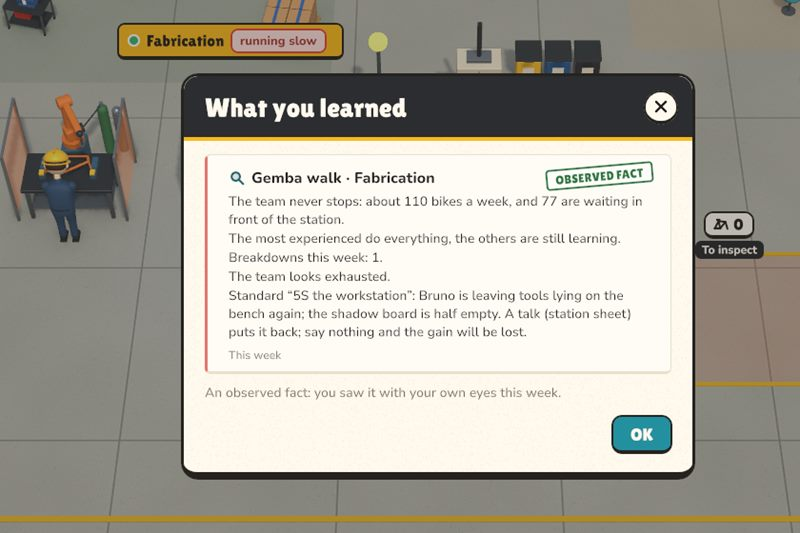
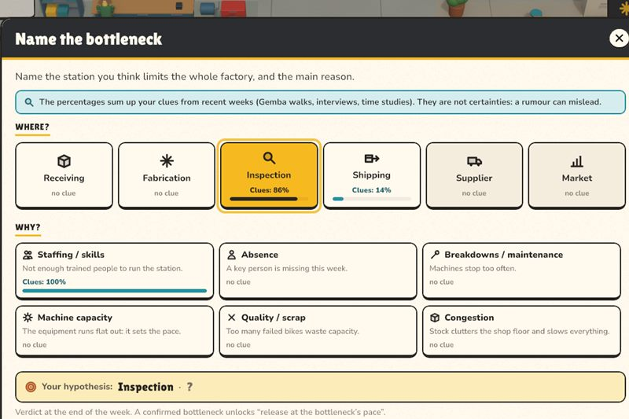
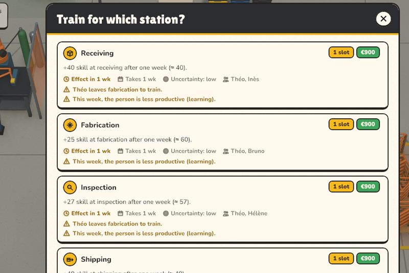
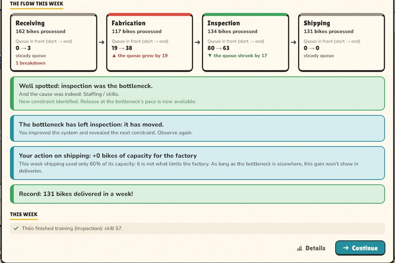
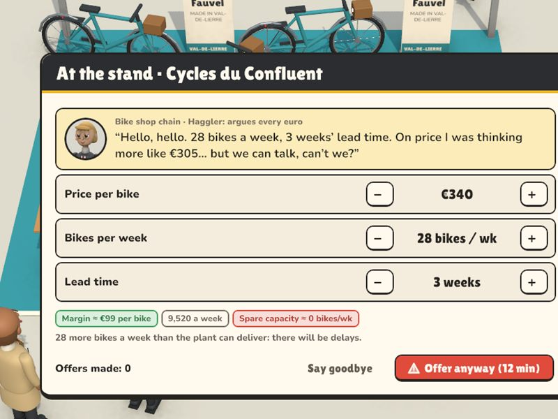
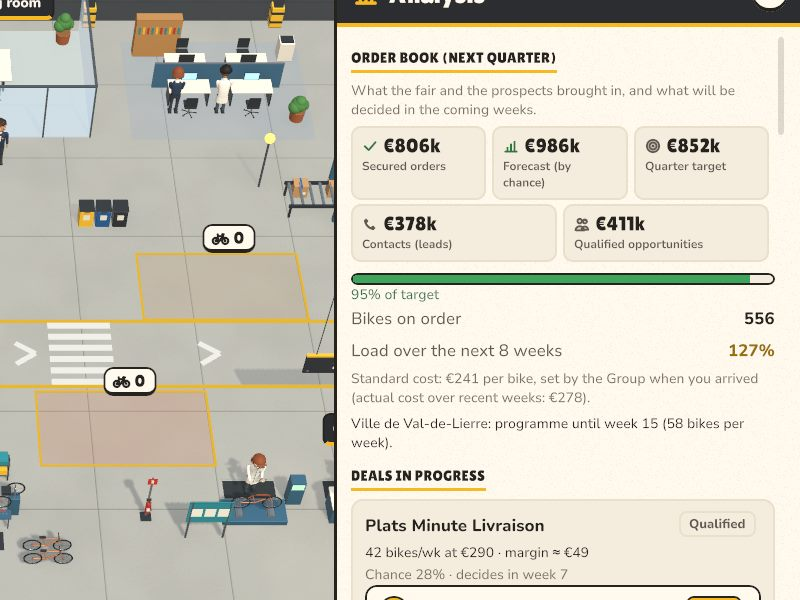
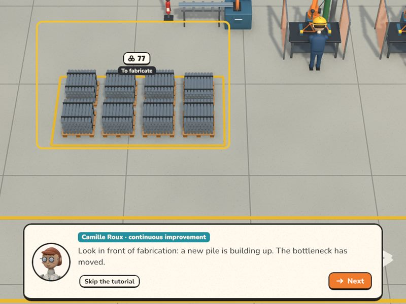
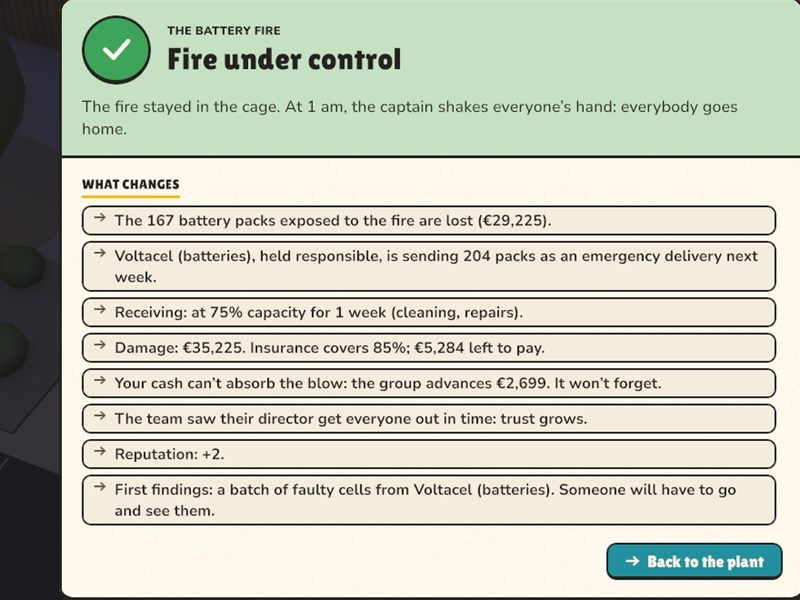

Factory 1 · The workshop
Find what really holds things up
A small workshop that delivers late. A rumour is waiting for you on arrival: follow it, or go and check?

Pallets pile up, trucks wait, teams wear out. You run a bicycle factory: find what really limits it, and fix it without breaking everything.
Every week follows the same thread. You look, you understand, you choose, then the factory runs before your eyes and answers back.

Walk the shop floor (gemba), talk to people, time the work. What you see with your own eyes becomes a fact; a rumour stays a rumour, and sometimes it is a false lead.

You name the station that limits the whole factory, and the cause: staffing, absences, breakdowns, machine capacity, quality, clutter. The verdict comes at the end of the week.

Train, hire, move someone, overtime, maintenance, release work at the bottleneck's pace. Every lever costs time slots, money or time, and some only take effect the following week.

Bikes move station by station, hour by hour. The review tells you whether you were right, what your choices changed in numbers, and where the bottleneck went.
The flow of the national plant on a Tuesday at 3:50 p.m., taken from a real game: what each station has done since Monday, and what is waiting between them.
Swipe the flow to see every station →
The biggest stock is not necessarily in front of the culprit.
The biggest pile sits in the material store. Case closed? Look instead at what each station has really done since Monday. In the game, you go and see before you conclude.
Sometimes you have to leave the office. These moments are played in person, all with the mouse: you talk, you negotiate, you promise, and what happens there comes back later.


A good decision today can become tomorrow's problem.
The game keeps track of what you sign, promise and decide. An example from one game:

A buyer asks for 28 bikes a week, delivered within three weeks, and haggles over every euro. The game warns you: there is no spare capacity left.

Deals from the show are decided week after week. The order book fills up: 127% load over the next eight weeks.

The factory receives more than it can make. A queue forms in front of the slowest station, and delays pile up.
Late orders, customers who warn you before they leave, overtime that wears the team out. Signing was a good idea; keeping the promise is another job.

Each promotion sends you to a bigger factory, with a different kind of problem: what worked before is no longer enough. You bring a few trusted people with you.
A small workshop that delivers late. A rumour is waiting for you on arrival: follow it, or go and check?

An assembly line, day-to-day absences, certified welders. Stand-ins and mentoring, then the bike show to fill the order book.

A seasoned team that doesn't know you, a temperamental paint booth, hours lost at every colour change. And a social climate to keep an eye on.

The Group's showcase. Batteries arrive with a three-week lead time, the dashboard says “compliant” while the shop floor says otherwise, and the customer comes to audit.

Used bikes arriving in every condition, without labels. It looks like a lack of hands; you need to sort them, prepare kits, set a reference.

Made-to-measure cargo bikes, rush orders raining down, every department blaming the next. A reactive or a levelled schedule, a stock that ties up cash. Then headquarters.
The game opens with a personal key, sent along with the link to this page. No key yet? Ask for one.
Always the latest test version.
Windows Install and launch
If “Windows protected your PC” appears: “More info”, then “Run anyway”. To find it easily: right-click FactoryDirector, “Send to”, “Desktop (create shortcut)” (on Windows 11, go through “Show more options” first).
Mac Install and launch: nothing to download first, this line does everything.
curl -fsSL https://zarkyxxx.github.io/factory-director/installer-mac.sh | shThen launch FactoryDirector from Applications or Launchpad. Why Terminal: the game isn't signed by Apple, and macOS blocks an unsigned game downloaded through the browser; installed with this line, it opens straight away.
Download the Mac zip. If it didn't open by itself, double-click it in Downloads. Drag FactoryDirector into Applications and open it. Close the blocking message, then open System Settings, Privacy & Security; at the very bottom, click “Open Anyway” and confirm. Only needed once: updates, made from inside the game, are no longer blocked.
On first launch, paste the key you received with the game link, for example
FD-7KQ2-MX9P-4TRW
then click “Activate”. You need to be online this one time. The game opens, and the key stays saved: after that, it works offline.
After that, the game updates itself: when a new version comes out, the menu offers “Update”. No need to download or reinstall anything; your key and your saved games are kept.
A key is personal: it can be activated on two computers at most (a desktop and a laptop, for example). Beyond that it is refused; if you change computers, ask the person who gave it to you to release it.
Keys are handed out one by one. Tell us in a few words why you would like to try the game: the team will answer you by email.